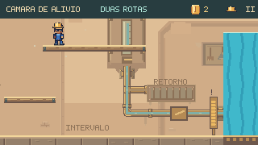
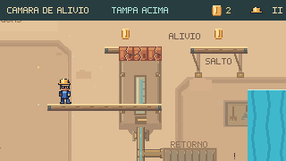
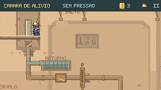
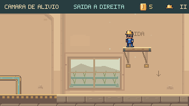
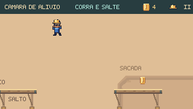
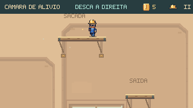
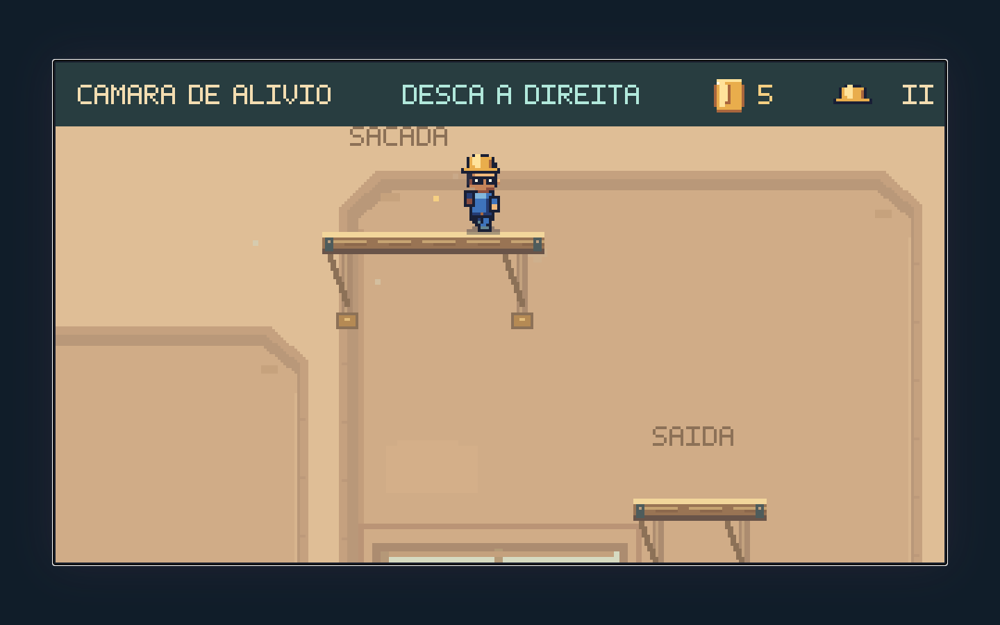

Revisão seguinte: leitura e continuidade nas oito cenas →
A oficina ganha
um percurso.
A Câmara de Alívio agora continua pela passarela, pela sacada e por um patamar de saída. A câmera revela a tampa durante a subida e mantém o destino visível durante os saltos. Abrir o alívio torna as quedas seguras; conservar a pressão oferece um desafio opcional de corrida e salto.
Ver o destino antes de agir


A tampa ficava acima da tela enquanto Feka estava na plataforma intermediária. Agora o enquadramento mostra o próximo salto. Depois da abertura, a câmera passa a acompanhar o retorno ao piso.
Mesmos comandos, desde o início, nas duas versões. A última comparação mostra trajetórias diferentes porque a passarela ainda não existia. As posições, a câmera e a física vêm da partida, sem poses preparadas.
Uma escolha que muda o risco
O piso continua permitindo atravessar no intervalo seco. Subir pela manutenção permite retirar a pressão, explorar os apoios altos e recuperar uma queda. Quem conserva a tampa pode alcançar a mesma sacada com um salto de corrida.
Exploração com retorno
Duas moedas novas recompensam a continuação elevada. A sacada desemboca num patamar inferior e depois no piso de saída. Nenhuma moeda é obrigatória para concluir a passagem.
Retirar a pressão e explorar
A tampa mantém a função física: basta abrir uma parte para a água seguir pelo retorno lateral e a grelha perder pressão. Da plataforma de manutenção, o jogador pode saltar diretamente para a passarela ou seguir pelo piso seguro.


Conservar a tampa e dominar o salto
A passarela e a sacada ficam na mesma altura. Isso mantém a chegada dentro da tela até no ponto mais alto do salto. A borda clara, o prêmio e a indicação de corrida tornam legível a travessia sobre a grelha.


O salto foi conferido em 252 momentos do ciclo da água e com variações de impulso e duração do comando. Soltar cedo ainda pode causar uma queda: abrir o alívio antes continua sendo uma decisão útil.
Dentro do capítulo
A Galeria leva à Câmara pelo botão Alívio. Depois da conclusão, Outra rota propõe conservar a tampa e o capacete. A nova travessia elevada cumpre esse objetivo; o percurso pelo intervalo seco continua válido.

Verificação
1.011 testes de Guaíra aprovados, incluindo 15 novos nesta rodada. Build, validadores e TypeScript aprovados. A sequência completa da Galeria ao mapa passou no capítulo real, incluindo Outra rota e Recomeçar.
Os 15 testes novos cobrem teclado e toque simulado, movimento normal e reduzido, câmera durante os saltos, visibilidade dos apoios, ciclo completo da grelha, variações de impulso, quedas recuperáveis, retorno, pausa e reconstrução no checkpoint.
As capturas vêm do renderizador de produção. Os vídeos usam simulação a 60 Hz e captura a 15 quadros por segundo. São comandos ensaiados: demonstram execução, mas não medem descoberta, dificuldade percebida ou diversão. A próxima avaliação deve observar jogadores escolhendo as rotas e interpretando a tampa e a passarela.
Decisões e reprodução · Capturas e percursos · Percursos no capítulo · Conferência das oito cenas